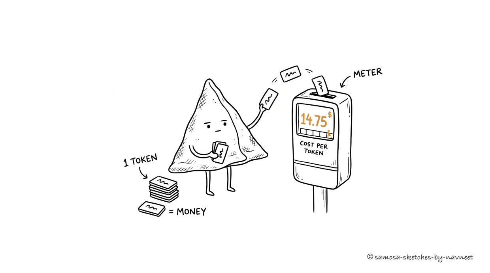

Every character costs money. Understanding tokens and pricing is the foundation of every AI product decision.
Every token got a price tag, every call got a bill,
Haiku for the small jobs, Opus for the skill.
Scale it up, watch the zeros start to climb —
Pick the right model or you're burning dimes.
I What Are Tokens?
You don't pay per word or per character. You pay per token — a chunk of text that might be a whole word ("cat"), part of a word ("understand" + "ing"), or a single character. Spaces, punctuation, and newlines count too.
Analogy
Think of tokens like syllables on a taxi meter. You're not charged by the sentence or the paragraph — you're charged by the chunk. And the meter runs on both sides: the tokens you send in (the prompt) and the tokens the model sends back (the response).
Tokens are the unit of cost. If you don't understand them, you can't estimate costs or make informed decisions about prompt design, context length, or model selection. Rule of thumb: 1 token ≈ 0.75 words in English (100 words ≈ 130 tokens). Code is more token-dense than prose, and non-English languages use more tokens per word.
Try it yourself:
Try it yourself
Tokenizer Playground
Type or paste text below. Each colored block is one token.
0tokens
0characters
0words
0tokens/word
Notice how code and JSON use more tokens per "word" than prose. A JSON key-value pair like "user_id": "abc123" is 7-8 tokens despite being just a few "words." Structured data eats your token budget for breakfast.
II The Price Tag

Every token is a coin in the meter. Tokens in, tokens out — the fare climbs with each one the model reads or writes.
Input tokens and output tokens are priced differently. Output tokens cost 3-5x more because generation is computationally harder than comprehension. The meter runs faster on the way out.
Key Insight
A classification task (long document in, one-word label out) is far cheaper than a content generation task (short instruction in, long article out). Your feature's cost profile depends on which direction the tokens flow.
Pricing across model tiers in 2026 (per million tokens):
Model Tier
Input
Output
Use case
Small (Haiku-class)
$1.00
$5.00
Classification, extraction, routing
Medium (Sonnet-class)
$3.00
$15.00
Most product features, chat, summarization
Large (Opus-class)
$5.00
$25.00
Complex reasoning, coding, research
That's a 5x price difference between cheapest and most expensive. Choosing the right model tier is one of the highest-leverage decisions you can make. And these decisions add up fast: Anthropic's analysis of millions of API interactions found that roughly 50% of all agentic tool calls go to software engineering tasks alone, with every other domain in the single digits. That concentration means a huge share of real-world LLM spend is driven by one use case — and optimizing model selection there has outsized impact.
III Model Tiers
Every provider offers small, medium, and large tiers. The naming varies — Haiku/Sonnet/Opus, or mini/standard/frontier tiers — but the tradeoff is universal:
Small models — fast and cheap, but struggle with nuance and complex reasoning. Great for classification, extraction, simple Q&A.
Medium models — the workhorses. Good enough for most product features. This is where most production traffic should go.
Large models — most capable, slowest, most expensive. Reserve for tasks where quality genuinely can't be achieved with a smaller model.
Builder Tip
You don't need one model for your whole product. A small model classifies requests, a medium model handles conversations, a large model tackles the hard stuff. This is called model routing, and it cuts costs 50-60% compared to defaulting to the biggest model — which is like hiring a surgeon to apply band-aids.
Compare the same task across model tiers:
Compare
Model Comparison
Pick a task type and see how each model tier handles it — quality, speed, and cost.
Small
Haiku-class
Quality
Speed
Cost
Medium
Sonnet-class
Quality
Speed
Cost
Large
Opus-class
Quality
Speed
Cost
Model selection is task-dependent. A small model classifies a support ticket just as well as a large one — at 1/5th the cost. But ask it to analyze churn, and you'll get the analytical equivalent of "have you tried turning it off and on again." Match the model to the task, not to your ego.
IV Cost at Scale
Here's where AI product plans fall apart. A prototype at $0.02 per request feels free. Multiply by real usage and it stops being free very fast. OpenAI co-founder Greg Brockman has argued that compute scarcity — not model capability — is the real scaling constraint in the agentic era. The models are good enough; the question is whether you can afford to run them.
The equation: cost = requests × tokens per request × price per token. Each variable varies by orders of magnitude:
Tokens per request depend on prompt design. A 200-token prompt with a 50-token response is fundamentally different from 2,000 in and 500 out.
Price per token depends on model choice — a 5x range.
Two builders building similar features can end up with costs that differ by 100x or more, based solely on design decisions:
Calculator
Cost at Scale
Adjust the sliders to model your product's usage pattern and see the cost impact.
10,000
5
500
150
Daily requests
50,000
Cost per request
$0.004
Daily cost
$175
Monthly cost
$5,250
Takeaway
Small design decisions compound at scale. Cutting a prompt from 1,000 to 500 tokens doesn't feel significant — until you multiply by 500,000 daily requests. Switching from a large model to a medium for a task that doesn't need the extra capability can save tens of thousands per month. Your CFO will send flowers.
Test your understanding
Article Recap
5 questions covering the key concepts from this article.
1 of 5
V What's Next
You now understand LLM economics: tokens as the unit of cost, input vs. output pricing, model tiers, and how costs compound at scale. But cost is only half the equation.
In Part 2: latency. Why LLMs feel slow, how streaming transforms the experience, and the optimization levers — caching, prompt engineering, model routing — that let you ship AI features that are both fast and affordable.